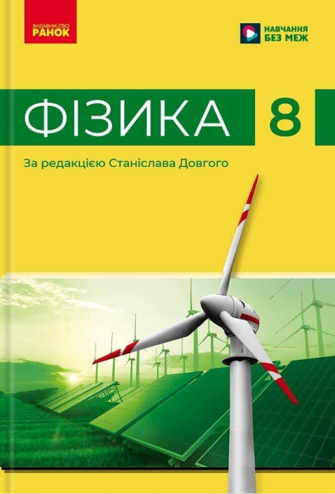

Вітаю на головній сторінці курсу фізики для 8 класу за програмою НУШ.
Тут зібрані всі уроки, лабораторні роботи та проєкти. Для швидкого переходу до потрібного матеріалу натисніть на відповідний номер уроку нижче.